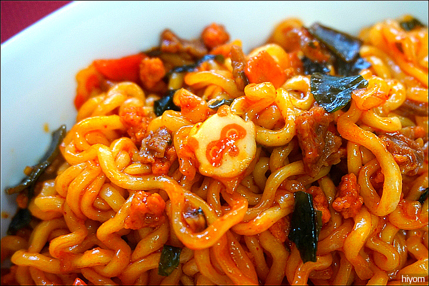
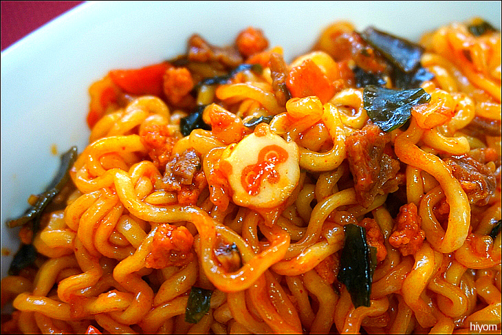
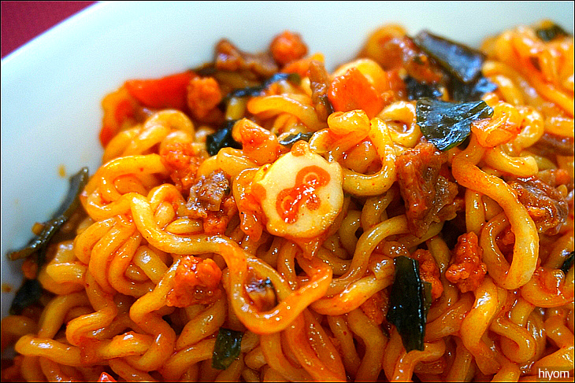

하단으로 가입시데이
저는 Joy입니다. 현재 소프트웨어학과 전공중이며 관심 있는 분야는 웹입니다.
좋아하는 동물은 강아지와 고양이입니다. 좋아하는 음식은 라면입니다. 라면 중에서 볶음 너구리를 가장 좋아합니다. 짱 맛있어요:) 야식으로 자주 먹습니다. 달달하니 우유랑 먹으면 찰떡궁합입니다. 
빼꼼 ~ 여기가 문서하단이에요!
 좋아하는 동물은 강아지와 고양이입니다.
좋아하는 음식은 라면입니다. 라면 중에서 볶음 너구리를 가장 좋아합니다. 짱 맛있어요:)
야식으로 자주 먹습니다. 달달하니 우유랑 먹으면 찰떡궁합입니다.

좋아하는 동물은 강아지와 고양이입니다.
좋아하는 음식은 라면입니다. 라면 중에서 볶음 너구리를 가장 좋아합니다. 짱 맛있어요:)
야식으로 자주 먹습니다. 달달하니 우유랑 먹으면 찰떡궁합입니다.
